Экспертный блог о полиграфии: статьи и советы
-

Упаковка, которая продаёт букет ещё до кассы: пакеты и коробки для цветочных магазинов
Фирменные конверты, крафт-пакеты, коробки и бирки для букетов с логотипом цветочного магазина — какие форматы бывают и как заказать пробную партию.
-

Шоколад и чай «Лазури»: сказы Бажова, Демидовы и улицы Екатеринбурга на фантике
Что стоит за названиями сувенирного шоколада и чая: сказы Бажова, история Демидовых, улицы и трамваи Екатеринбурга — гид по каталогу готовой продукции.
-

Раскраски в типографии «Лазурь»: от пробного тиража до миллиона экземпляров
Как мы печатаем раскраски: сертификация и ЭДО для миллионных тиражей, форматы и способы сборки, упаковка, помощь с ISBN и доставка.
-
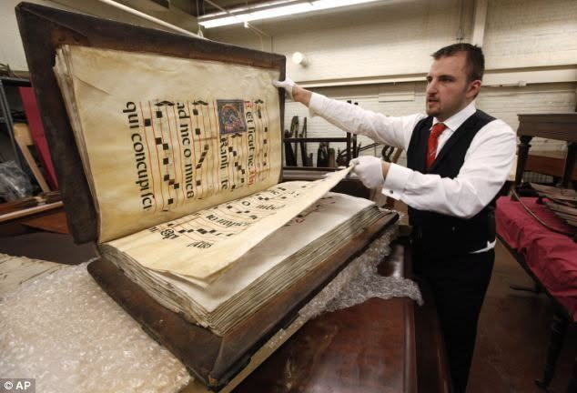
Кодекс Гигас: рукопись, которую называют «Библией Дьявола»
Крупнейшая сохранившаяся средневековая рукопись в мире: легенда о монахе и дьяволе, портрет сатаны и путь книги из богемского монастыря в Швецию.
-

«Библиотекарь» Арчимбольдо: портрет, собранный из книг
Портрет XVI века, который легко принять за сюрреализм XX века: как книги стали лицом человека и какую сатиру скрывал художник.
-

Своя колода: печатаем карты, карточки и настольные игры на заказ
Игральные карты, сувенирные колоды, обучающие и квиз-карточки, настольные игры на заказ — материалы, тиражи и примеры готовых работ.
-
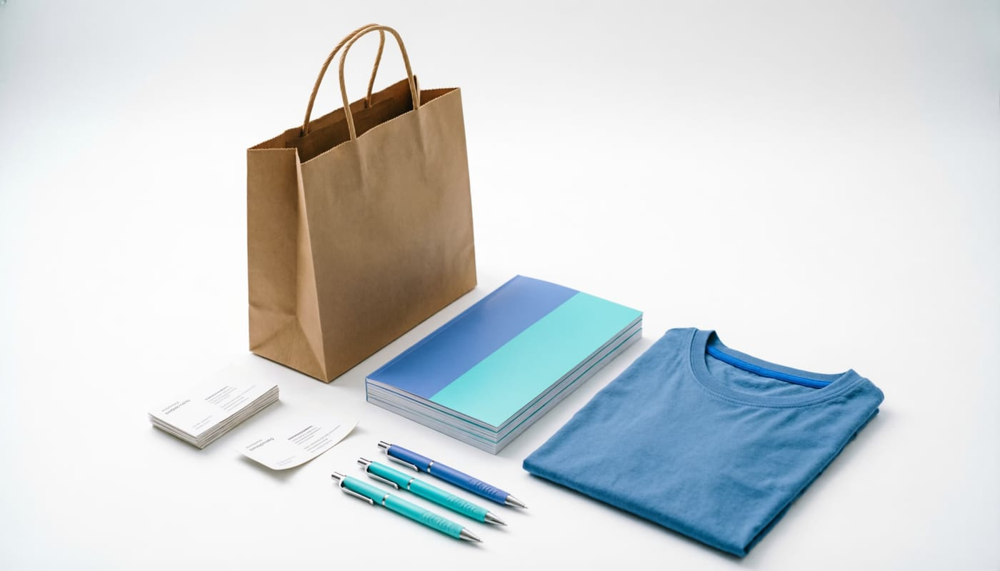
Один стиль — весь стенд: печатная и сувенирная продукция для выставок
Пакеты, буклеты, каталоги, визитки, футболки, ручки — как собрать печатную и сувенирную продукцию для выставочного стенда в едином фирменном стиле.
-

Живое слово на бумаге: почему бизнес снова выбирает открытки
Почему бумажная открытка эффективнее электронного поздравления: психология осязаемого подарка, корпоративные традиции и как одиночные открытки помогают бизнесу выстраивать доверие с клиентами.
-
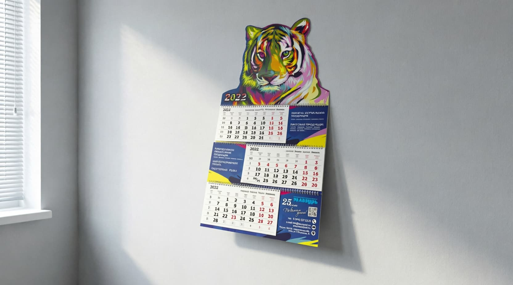
Календари на заказ: виды, технологии и как успеть к сезону
Квартальные, настольные, перекидные и премиум-календари: разбираем виды и технические характеристики, показываем примеры из производства и объясняем, как успеть напечатать тираж к Новому году.
-
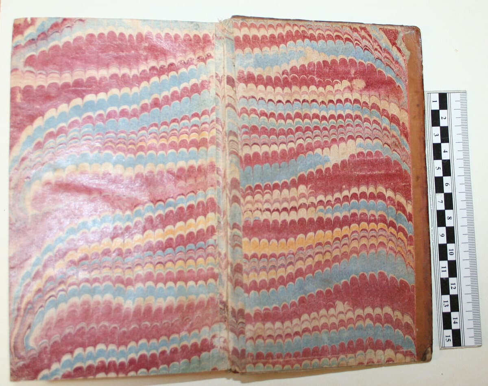
Мраморная бумага. Кто же был первым изобретателем?
Что такое «мраморная бумага»? Если просто - это рисунок на воде. Краску капают на специальный раствор, где она растекается на поверхности.
-
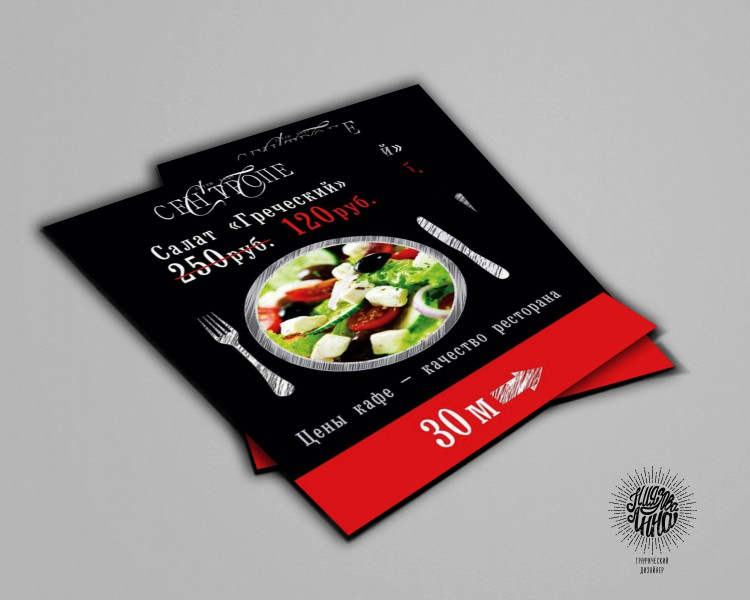
Весенняя акция: Скидка 10% на печать больших тиражей в апреле и мае!
Мы запускаем весеннюю акцию — скидка 10% на печать листовок, плакатов и флаеров большими тиражами в апреле и мае 2026 года!
-
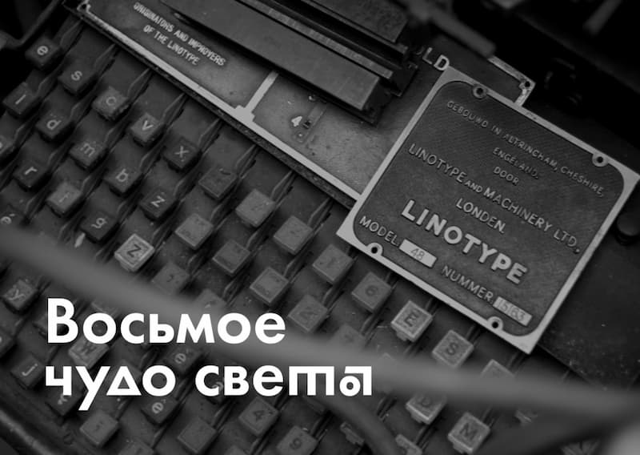
Линотип: как часовщик из Германии изменил мир печати навсегда
История линотипа — машины, произведшей революцию в полиграфии. Трагическая судьба изобретателя Оттмара Мергенталера и наследие, определившее развитие мировых СМИ на сто лет.
-
Этикетка для агрессивной среды: что не боится растворителей, щелочи и влаги
Для производителей красок, лаков, автомобильной химии и бытовой чистоты этикетка — не просто дизайн, а вопрос выживания бренда.
-
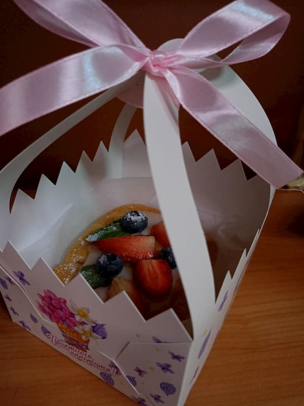
Сладкий знак внимания: как типография «Лазурь» создала праздничное настроение
В преддверии тёплого весеннего праздника команда типографии «Лазурь» задумалась о том, как сделать этот день особенным для наших дорогих сотрудниц.
-
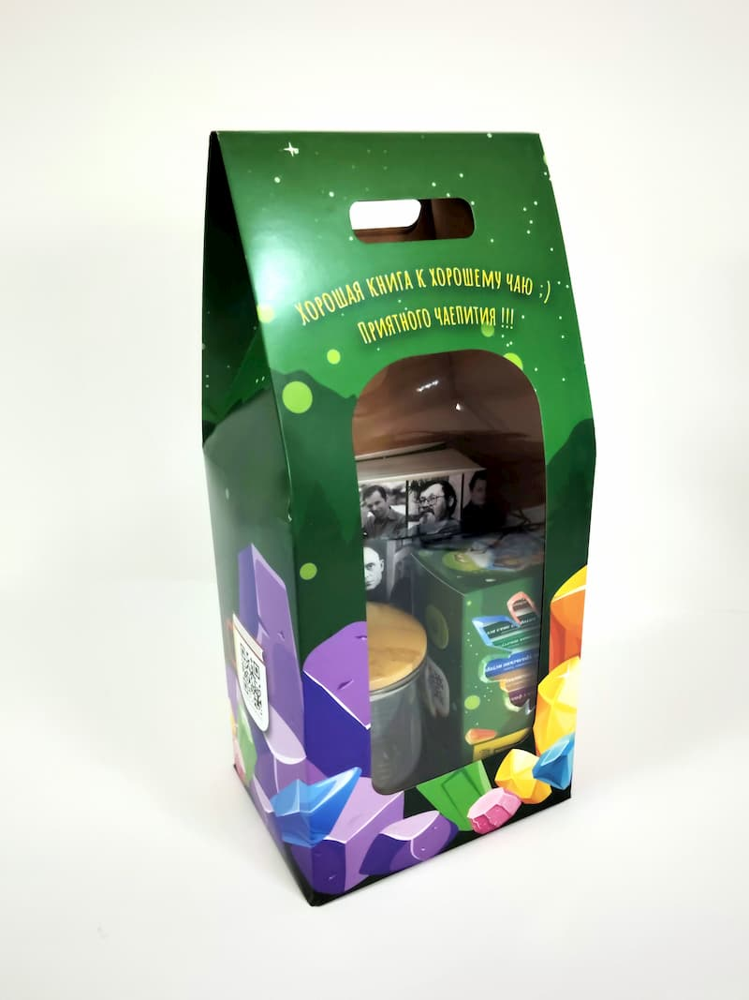
Мужской характер и уральский характер: как мы поздравляли коллег с 23 февраля
В этом году, выбирая подарки для наших мужчин к 23 февраля, мы решили не искать легких путей, а собрать нечто особенное — настоящее, душевное и со смыслом.
-
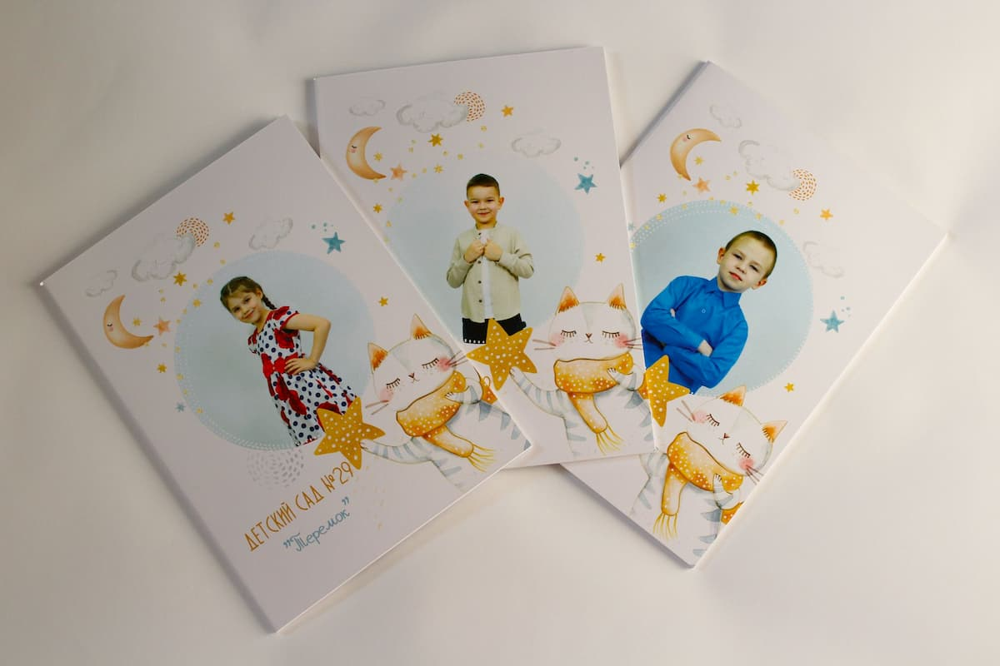
Вдохнуть жизнь в каждый кадр: почему ваши фотоальбомы достойны стать семейной реликвией
Знаете это чувство, когда отдаешь заказчику флешку и понимаешь: «Всё. Точка»? А через месяц тебе пишут: «Мы хотим распечатать, но не знаем куда...». Обидно, правда?
-
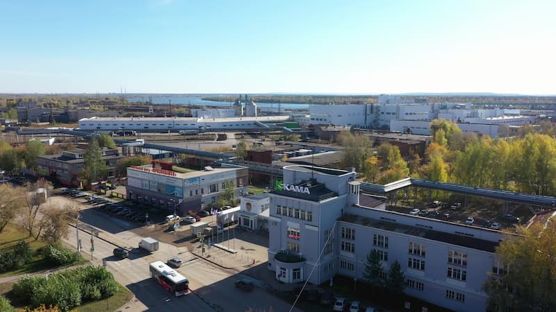
Справка об истории и деятельности ООО «КАМА»
ООО «КАМА» является единственным в России производителем мелованного упаковочного картона FBB (Folding BoxBoard) и легкомелованной бумаги LWC (Light Weight Coated) в рулонах и листах.
-
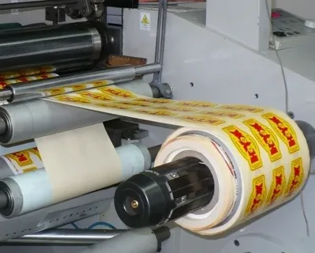
Флексография: как советский инженер, американский фастфуд и резиновая груша изменили упаковку
Обычно про флексо пишут скучно: «ротационная машина, фотополимерная форма, анилоксовый вал…».
-
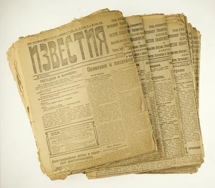
Этапы развития периодических изданий в России
Периодические издания представляют собой ключевой элемент системы массовых коммуникаций, выполняющий функции просвещения, распространения знаний, культурного развития и формирования общественных взглядов.
-
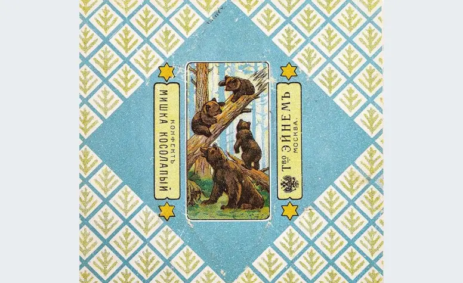
Искусство рекламы в Российской империи
Исследуем, как выглядела реклама в России до 1917 года: кто были её создатели, что она продвигала и какие визуальные тенденции были популярны.
-

История картонной коробки
Картонные коробки стали неотъемлемой частью нашей повседневной жизни. Сегодня они представлены в самых разных формах и изготавливаются из различных материалов, включая круглые, квадратные и нестандартные варианты.
-
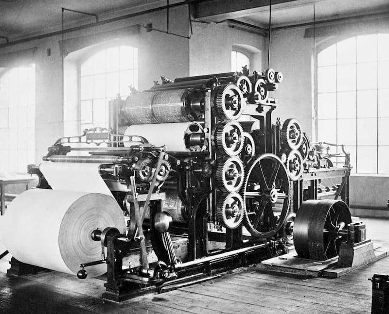
Зарождение и развитие офсетного способа печати
Согласно общепринятому мнению экспертов, официальной датой рождения офсетной печати считается 1904 год.
-
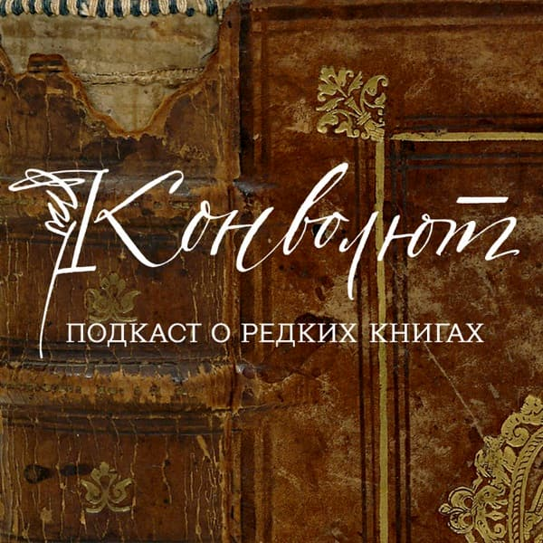
Конволют: почему современные типографы слушают подкасты о старых книгах
В мире цифровых технологий интерес к материальной книге только растет. Клиенты типографий все чаще хотят не просто напечатать текст, а создать вещь — с историей, душой и тактильными качествами.
-
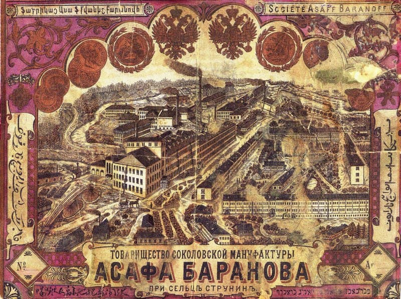
Дореволюционная реклама: как зазывали покупателя в царской России
23 октября в России — День работника рекламы. Прекрасный повод для музея-заповедника «Александровская слобода» открыть свои фонды и показать, как выглядела реклама сто и более лет назад.
-
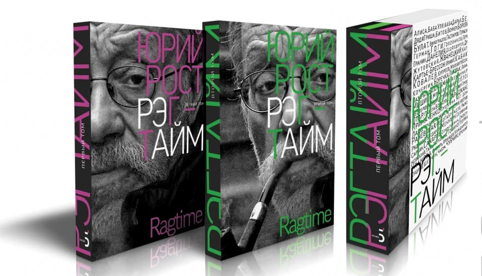
Интервью с мэтром: Борис Трофимов о жизни, дизайне и счастье творчества
Платформа Arzamas представила большое интервью с легендой отечественного дизайна — Борисом Трофимовым.
-
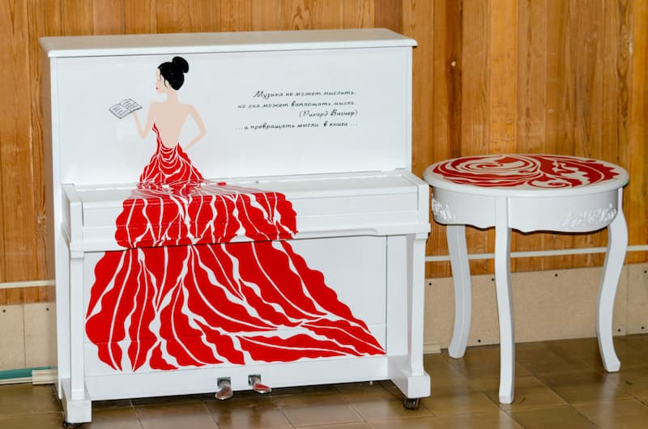
В нашей типографии появилось особенное пианино. Знакомьтесь!
Декабрь 2025 года. В наш рабочий цех, помимо новых бумаг и красок, приехал особенный «сотрудник» — пианино. Мы заказывали его специально для себя, и над его дизайном хорошо поработали.
-

Добро пожаловать в офис издательско-полиграфического комплекса «Лазурь» в Екатеринбурге: где рождаются ваши книги
Мы приглашаем любимых и будущих заказчиков посетить офис издательско-полиграфического комплекса «Лазурь» в Екатеринбурге
-
Гринч на производстве: как мы приручили зелёного нарушителя
Весь декабрь нашу типографию пытался захватить зелёный нарушитель.
-
«Рождественский поток книг»: как исландская традиция поддерживает культуру чтения
В канун Рождества исландцы дарят друг другу книги. Есть даже специальное слово, называющее эту традицию: Jólabókaflóðið
-
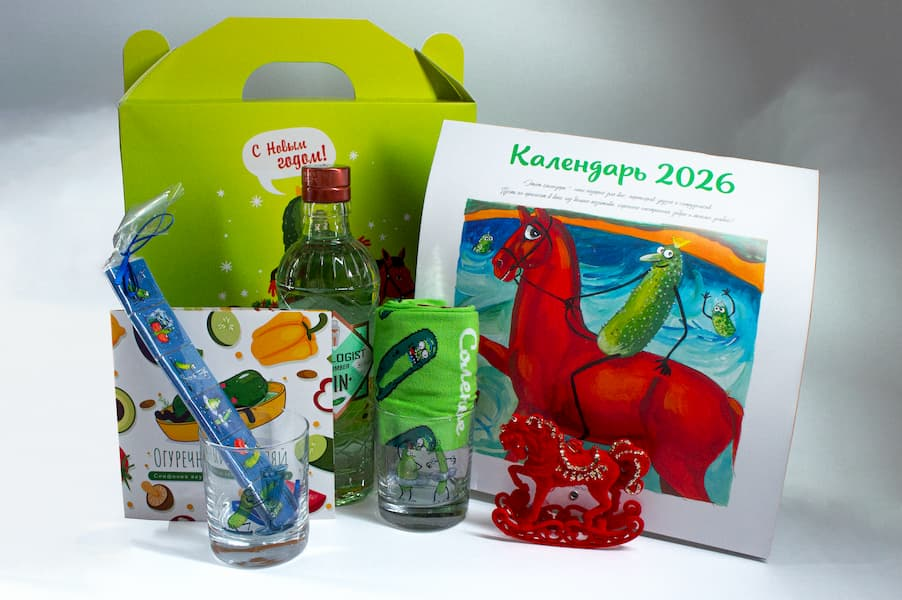
Новогоднее чудо в коробке: как мы создавали самый запоминающийся подарок года
Типография «Лазурь» всегда стремится удивлять. Сначала мы рассказали вам об уникальном календаре на 2026 год с философскими и юмористическими огурцами от художницы Анастасии Нильской.
-
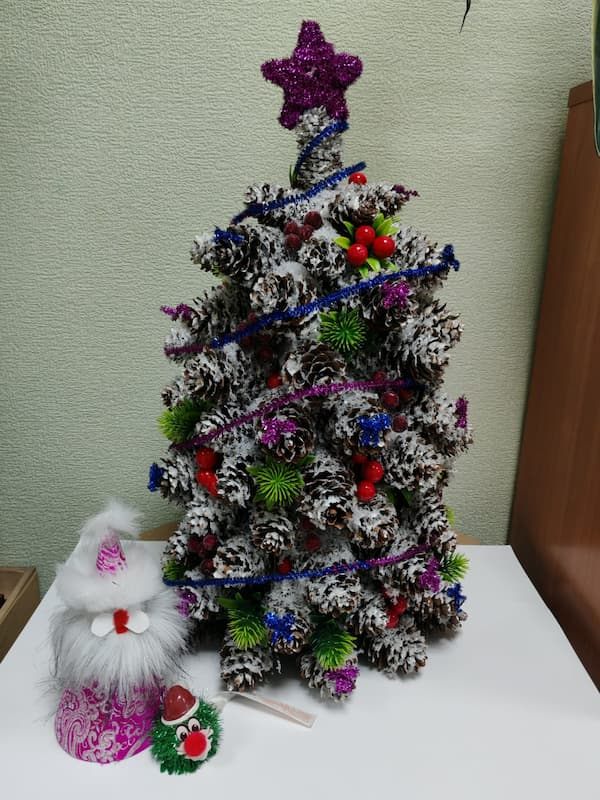
Волшебство своими руками: в «Лазури» прошел конкурс корпоративных ёлок!
Типография «Лазурь» славится не только качеством печати, но и творческим духом своего коллектива. Накануне Нового года это проявилось в полной мере — у нас впервые прошел конкурс на лучшую корпоративную новогоднюю елку!
-
Новогоднее настроение вопреки всему: представляем первый ролик из новой серии!
Работа на типографии «Лазурь» идёт полным ходом: предновогодние заказы требуют максимальной сосредоточенности, а сроки не ждут. Пасмурная осень и накопившаяся усталость дают о себе знать — но мы знаем, как добавить ярких эмоций в рабочие будни!
-
Электронные книги vs бумажные: почему «традиционный» формат не сдаёт позиций
На Книжном салоне‑2016 в Санкт‑Петербурге прошёл круглый стол «Книга и мозг», организованный петербургской книжной сетью «Буквоед».
-
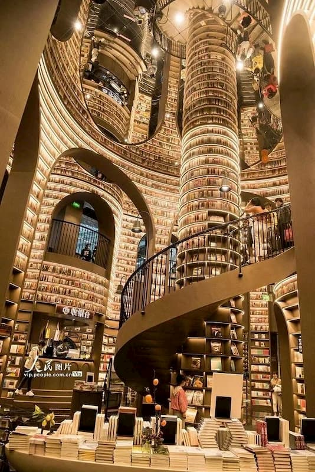
Уникальный книжный магазин: спираль знаний в Китае
В китайском Шэньчжэне открылся поистине удивительный книжный магазин Zhongshuge — место, где реальность перекликается с фантазией.
-
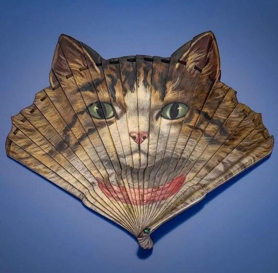
Веера: от искусства до современного маркетинга
Веер всегда был не просто аксессуаром, а настоящим произведением искусства. Изысканные изделия прошлых веков поражали своей красотой и мастерством исполнения.
-
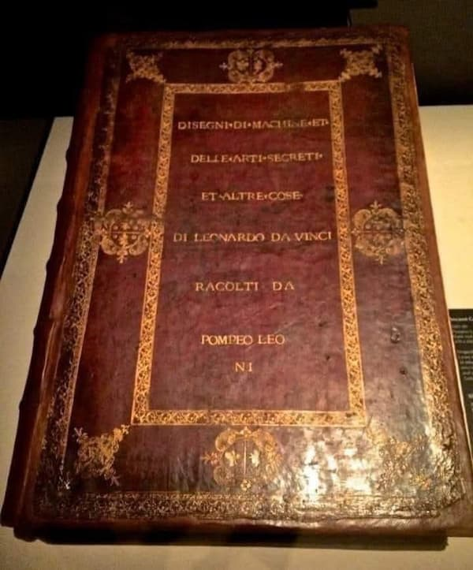
«Лестерский кодекс» — самая дорогая книга в мире
Лестерский кодекс — это уникальная тетрадь научных записей, созданная великим Леонардо да Винчи в период между 1504 и 1510 годами. Предположительно работа над рукописью велась как в Милане, так и во Флоренции.
-
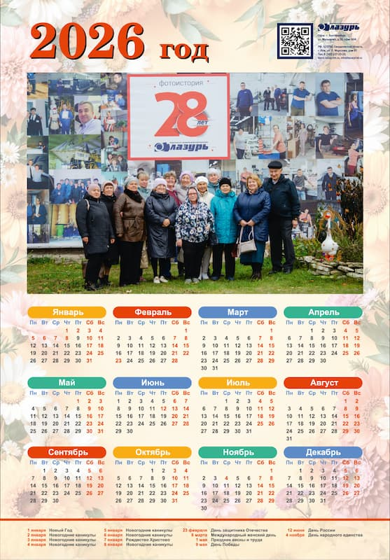
День пожилых людей: забота о бывших сотрудниках
В честь Дня пожилых людей наша компания организовала особое мероприятие для бывших сотрудников. Мы пригласили всех, кто когда-либо работал в нашей компании, чтобы выразить благодарность за их труд и вклад в развитие организации.
-

Цветные гравюры: от первых экспериментов до шедевра печатной графики
Цветная гравюра — это удивительное явление в истории искусства, которое зародилось в XIV–XV веках. Первыми пионерами в создании раскрашенных гравюр стали мастера средневековой Европы, особенно в Германии и Италии.
-
Типография «Лазурь» проводит Год театра для сотрудников и клиентов
Культурная программа стала важной частью жизни коллектива типографии «Лазурь». В рамках объявленного Года театра компания организует регулярные походы в театры для своих сотрудников и заказчиков.
-
Приглашаем к взаимовыгодному сотрудничеству на сайте типографии «Лазурь»
Мы рады сообщить о расширении возможностей нашего официального сайта. Теперь у вас есть уникальная возможность представить свой бизнес широкой аудитории через информационную поддержку от типографии «Лазурь».
-
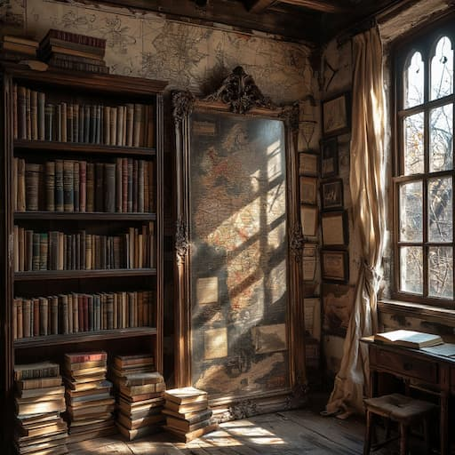
Удивительные факты о книгах, о которых вы не знали
Книги — это не просто источник знаний, но и удивительные артефакты, хранящие тайны прошлого и вдохновляющие на новые открытия. Давайте познакомимся с 20 любопытными фактами из мира литературы.
-
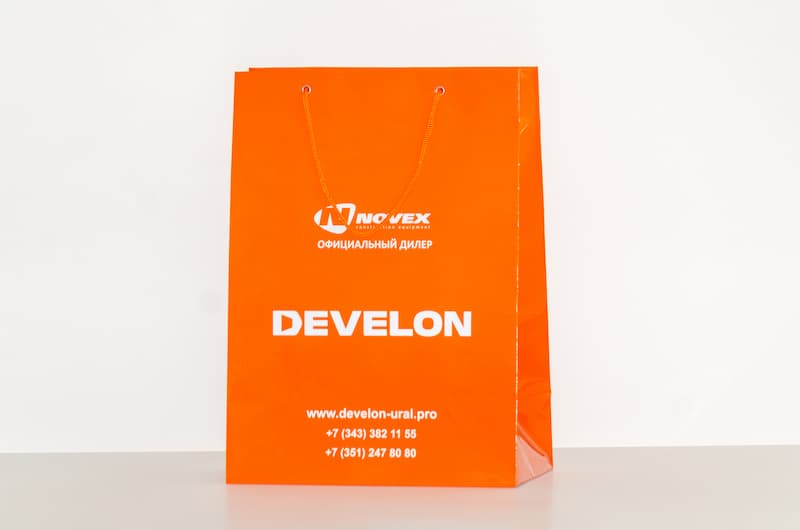
Бумажные пакеты с логотипом: эффективный инструмент продвижения вашего бизнеса
Маркетинговый инструмент нового поколения — это не просто упаковка, а мощный способ продвижения вашего бренда.
-
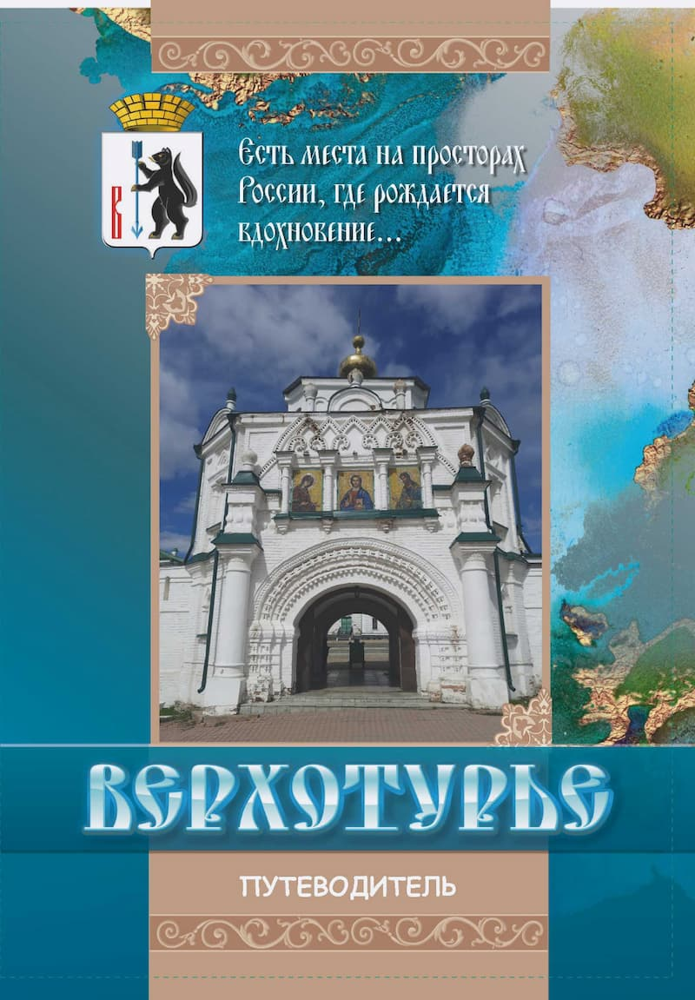
Верхотурье: духовная столица Урала
Верхотурье — один из старейших городов Урала, основанный в 1598 году. Город был заложен как острог на Бабиновской дороге — важнейшем пути, связывавшем Европейскую часть России с Сибирью.
-
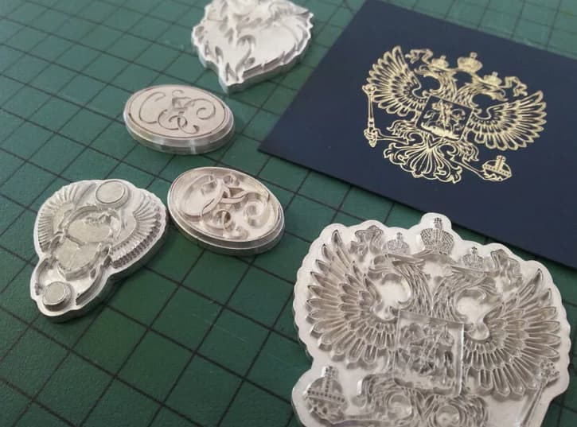
Надежность и удобство работы с типографией «Лазурь»: ваши заказы в надежных руках
Типография «Лазурь» заботится о комфорте своих клиентов и предлагает уникальные условия хранения всех материалов, связанных с вашими заказами.
-

«Лазурь» и «100 ТОНН»: как два десятилетия назад устанавливали первую рулонную машину на Урале
Запуск прогрессивного печатного оборудования стал трамплином для роста сразу двух бизнесов.
-
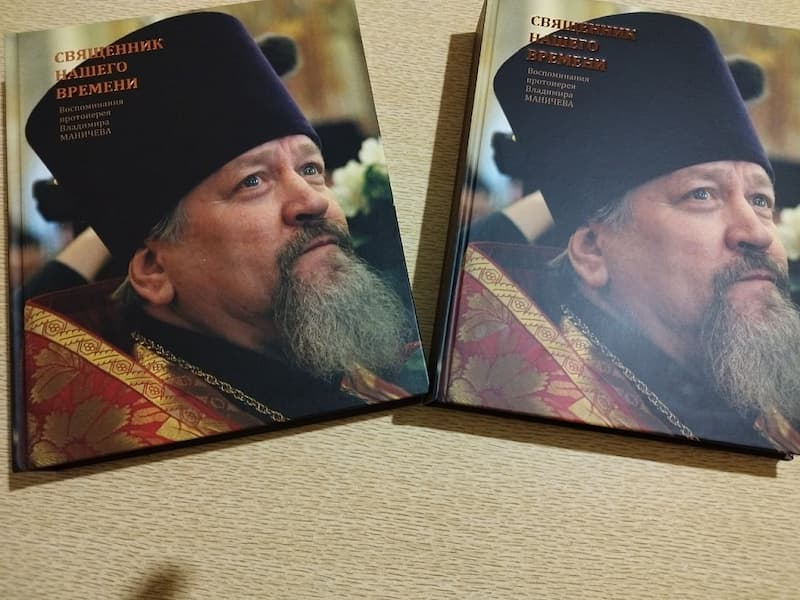
Вышла в свет книга о духовном пути протоиерея Владимира Маничева
14 июля протоиерей Владимир Маничев, ключарь Свято-Симеоновского кафедрального собора Челябинска, отмечает юбилей священнической хиротонии.
-

Типография «Лазурь» стала официальным партнёром «Российской газеты» в сфере полноцветной печати
Знаковый контракт был заключён в текущем году, когда типография «Лазурь» одержала победу в тендере на печать полноцветных выпусков «Российской газеты» — официального издания, имеющего особый статус в системе государственных СМИ России.
-
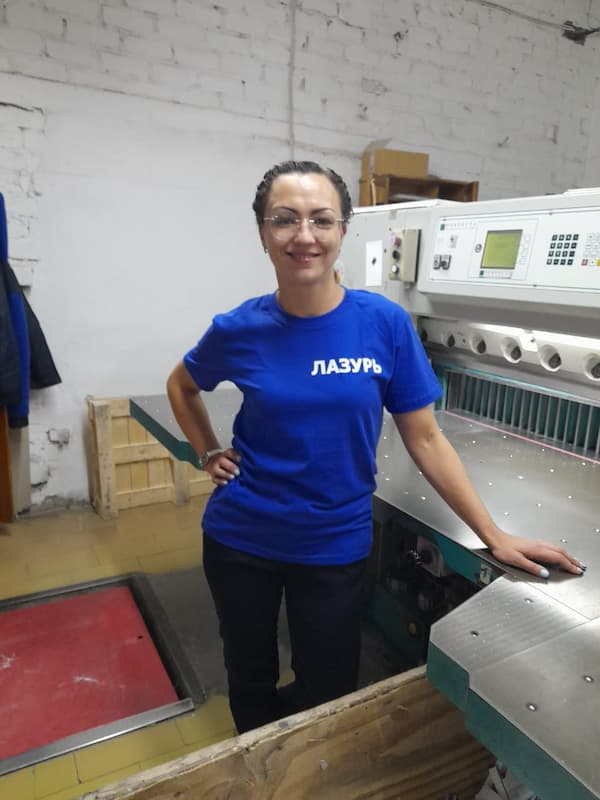
Командный дух в деталях: Специальные футболки для коллектива «Лазури»
Мы создали уникальные футболки с мотивационным текстом, который объединяет всю нашу команду
-
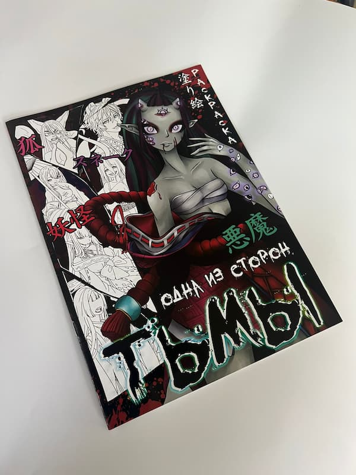
Комиксы в «Лазури»: от авторских историй до массовых тиражей!
Типография «Лазурь» активно развивает новое направление — печать комиксов!
-
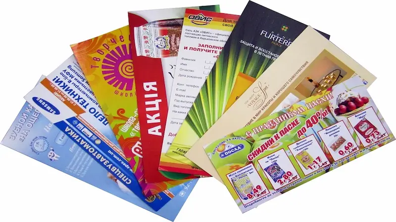
Полиграфия в рекламе: как печатные материалы увеличивают продажи и укрепляют бренд
Почему в цифровую эпоху физические носители остаются мощным инструментом маркетинга?
-
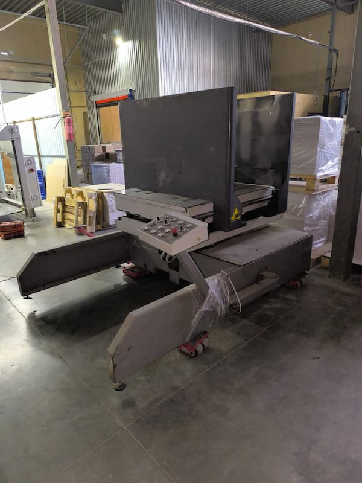
Новое оборудование в «Лазури»: промышленный переворотчик для бумаги большого формата!
Типография «Лазурь» продолжает инвестировать в современное оборудование!
-
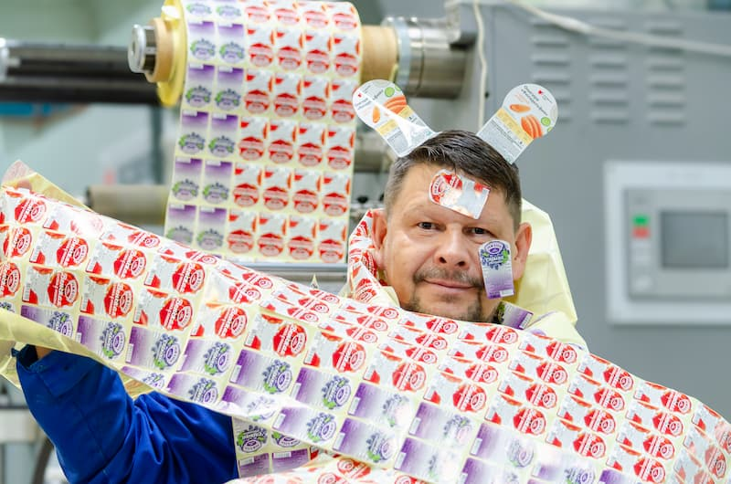
Флексопечать: современные технологии для яркой и долговечной упаковки и этикеток
Флексопечать — это современный метод печати, который использует гибкие печатные формы из фотополимера или резины.
-
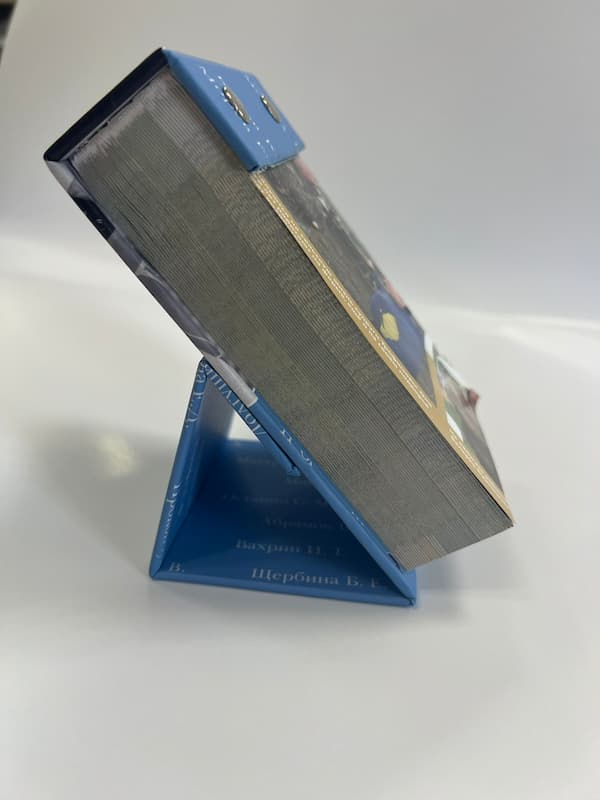
Календари 2026 уже в работе! Типография «Лазурь» открывает приём заказов
Не упустите возможность создать уникальный календарь, который станет вашим надёжным помощником в планировании важных событий.
-
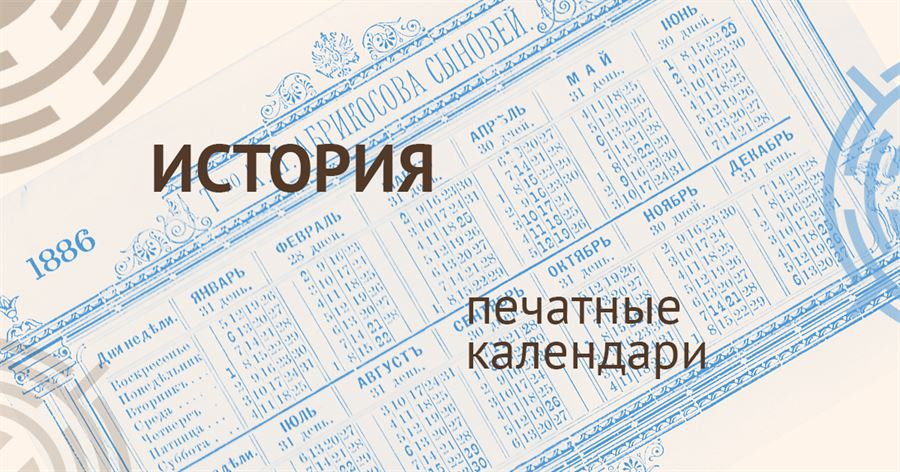
История календаря в России
Календарь представляет собой способ измерения продолжительных временных отрезков, который базируется на повторяющихся астрономических явлениях: смене дня и ночи, фазах Луны, смене сезонов.
-
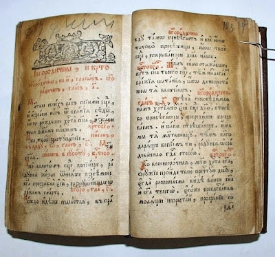
«Часовник» первопечатника Ивана Федорова: 460 лет со дня издания
В этом году исполняется 460 лет со дня выхода в свет знаменитого «Часовника».
-
Типография «Лазурь»: когда магия встречается с полиграфией! 🪄
Знаете, почему мы лучшие?
-
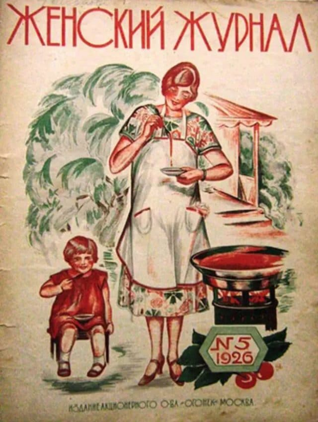
Женские издания в СССР: от революционной агитации до послевоенного быта
До революции 1917 года в России существовало множество журналов для женщин. Однако после прихода к власти большевиков ситуация кардинально изменилась.
-
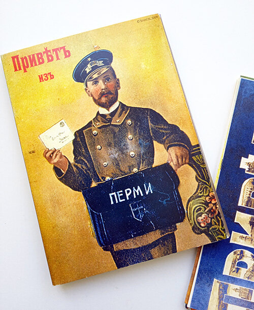
Видовые открытки: история «приветов» из путешествий
В конце XIX — начале XX века в обиход вошли особые почтовые открытки, получившие множество названий: «грюсы», «приветизы» и просто «приветы».
-

Оригинальный календарь от типографии «Лазурь»: огурцы с юмором
Типография «Лазурь» с радостью сообщает о начале работы над необычным календарем на 2026 год.
-
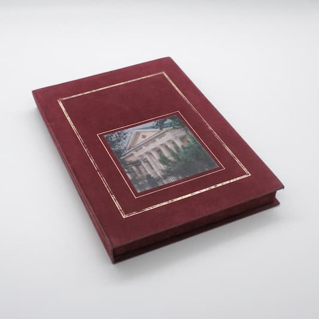
Футляры для книг от типографии «Лазурь»: защита и красота вашего издания
Футляр для книги — это не просто упаковка, а важный элемент защиты и презентационного оформления.
-
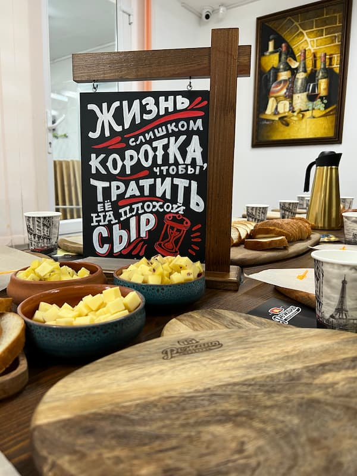
Ремесленная сыроварня «Режано»
«Режано» — это ремесленная сыроварня в городе Реж (ул. О. Кошевого, 16), создающая натуральные сыры ручной работы по европейским традициям из цельного молока.
-
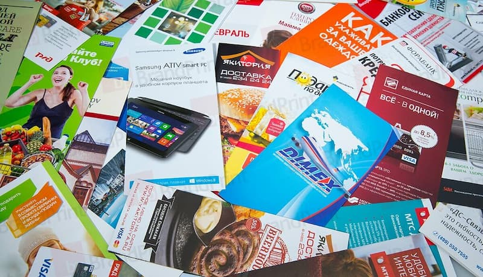
Листовки: эффективный инструмент продвижения вашего бизнеса
Листовка — это один из самых эффективных инструментов печатной рекламы, который помогает донести информацию о товарах, услугах или мероприятиях до целевой аудитории.
-
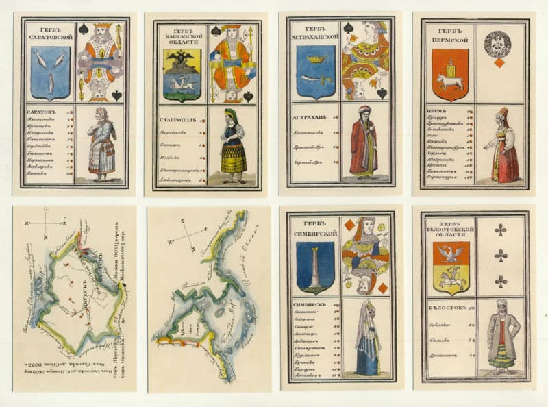
Уникальное изобретение XIX века: образовательные карты Грибанова
Игра «Географические карты России», созданная художником и гравером Константином Матвеевичем Грибановым. Это было не просто развлечение, а инновационное учебное пособие, объединившее элементы игры и научные знания того времени.
-

Книги в твердом переплете со скрытой пружиной
Твердый переплет со скрытой пружиной – это вершина полиграфического искусства, сочетающая в себе прочность и элегантность классического переплета с удобством раскрытия на 360 градусов, характерного для пружинных изданий.
-

Июль в Лазури: Закажи Календари – Получи +5% БЕСПЛАТНО! А от 200т.р. – Роскошный Кофр с Шампанским!
Типография «ИПК Лазурь» дарит невероятные бонусы всем, кто планирует новогодние календари в июле!
-
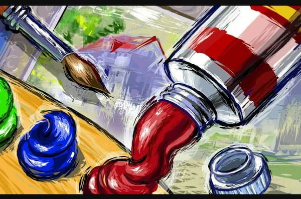
Урал в Красках Таланта: Как "ИПК Лазурь" Создает Уникальные Сувениры с Художниками
Вдохновение приходит неожиданно. После поездки в Санкт-Петербург, где поражает разнообразие стилей, в которых художники изображают любимый город, родилась мечта: показать Урал во всей его многогранности...
-
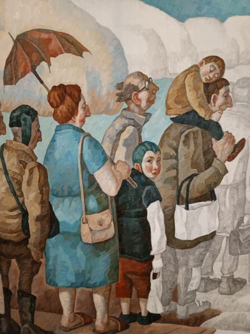
Очередь как Арт-Объект: Уникальная Традиция Баннеров от Типографии «Лазурь» в Екатеринбурге
В типографии «ИПК Лазурь» есть добрая и уже ставшая знаменитой традиция. Каждый год перед входом на наше предприятие появляется новый, большой, яркий баннер
-

Уникальные сувениры Екатеринбурга и Урала
Ищете для своего магазина или бизнеса сувенирную продукцию оптом в Екатеринбурге, которая действительно удивит и запомнится?
-
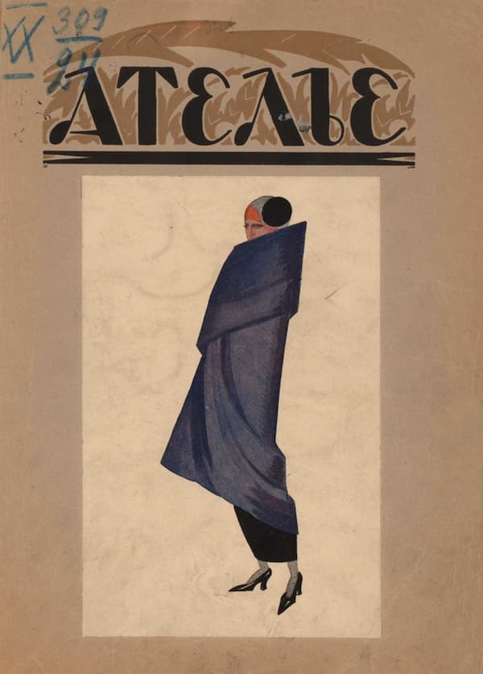
История создания роскошного журнала в СССР
В начале 1920-х годов, в непростое для страны время, произошло удивительное событие – появление журнала «Ателье».
-
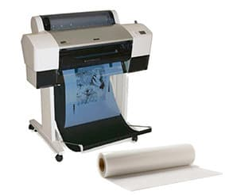
Офсетные формы: различия между технологией CTP и традиционным методом с плёнками
Давайте разберем отличия офсетных форм, полученных с использованием технологии CTP (Computer-to-Plate), от форм, созданных традиционным способом с применением пленок...
-
Интересные факты и истории из мира полиграфии
Полиграфия окружает нас повсюду, но мы редко задумываемся о том, сколько удивительных историй и фактов связано с печатным делом...
-
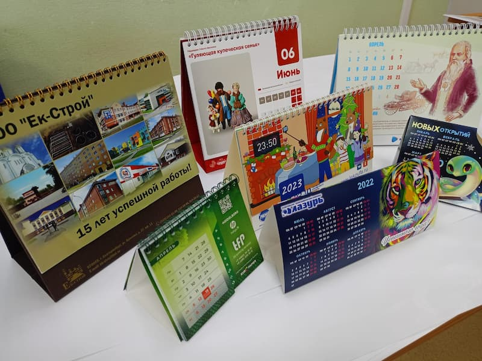
Изготовление настольных календарей в типографии: процесс работ по операциям и разновидности
Настольный календарь – это не просто функциональный предмет, позволяющий ориентироваться во времени. Это еще и эффективный рекламный инструмент...
-
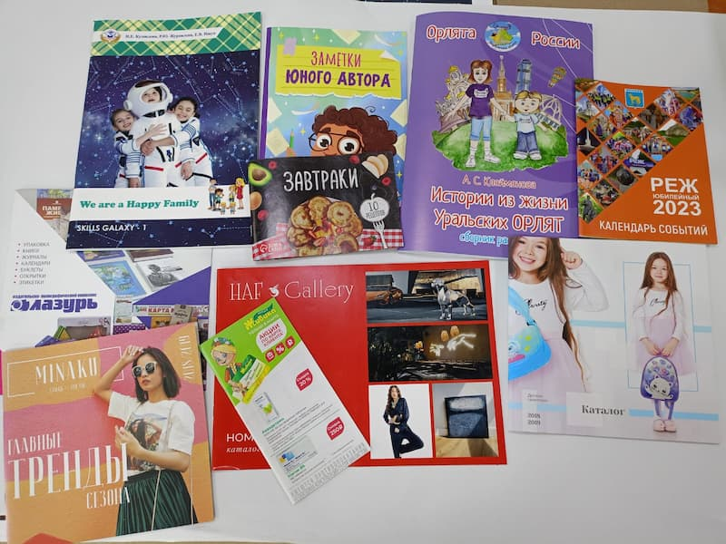
Типография: изготовление брошюр на скрепку, процесс работ по операциям, разновидности
В мире печатной продукции брошюра занимает особое место, являясь эффективным инструментом для передачи информации, рекламы и продвижения товаров и услуг...
-
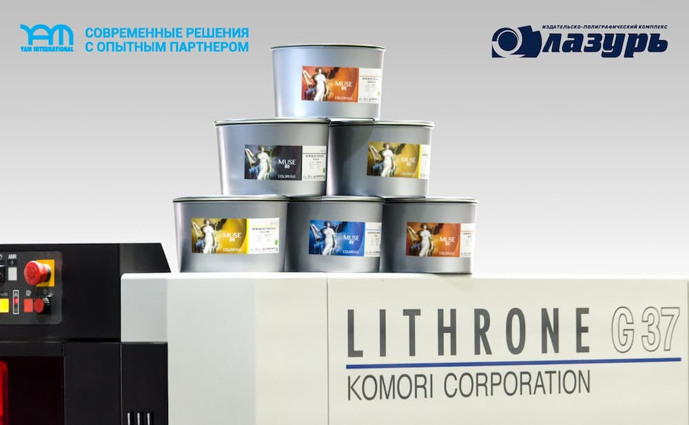
Двадцать лет доверия: история успешного партнерства «ЯМ Интернешнл» и типографии «Лазурь»
Компания "ЯМ Интернешнл" уже более 20 летсотрудничает с типографией "Лазурь", которая в этом году отмечает 28-й день рождения...
-
Сувенирная продукция с логотипом: ваш бренд в каждой детали
Сувенирная продукция – это не просто подарки, а мощный инструмент брендинга и маркетинга...
-
Современные технологии печати: как выбрать оптимальный метод для вашего проекта
В современном мире полиграфии существует множество технологий печати, каждая из которых имеет свои особенности и преимущества...
-
Инновационный инструмент в психологической практике: специальные карты для терапии
Профессиональный психолог, гештальт-практик, НЛП-мастер и EMDR-терапевт разработала уникальный инструмент для своей практики – специальные карты...
-
Вырубка в полиграфии: от замысла к готовому изделию
Вырубка в полиграфии – это процесс придания листу бумаги, картона или другого материала определенной формы с помощью штампа.
-
Шоппер: от простой сумки до модного аксессуара
Шоппер – это многофункциональная сумка, которая стала неотъемлемой частью современной жизни...
-
Эффективный корпоративный календарь: технологии, дизайн и синергия экспертов
Корпоративный календарь — это не просто инструмент планирования, а мощный маркетинговый ресурс, который работает на имидж компании круглый год.
-
Тихие сокровищницы: малоизвестные книжные уголки, где оживает магия чтения
Каждая книга, как и библиотека, — это мир, который начинается с идеи и воплощается в бумаге. В ИПК Лазурь мы знаем, как сделать это воплощение безупречным.
-
Сертификация детской полиграфической продукции
Сертификация полиграфической продукции для детей — обязательный этап для легального выпуска книг, журналов, учебных материалов и школьно-письменных принадлежностей на рынок Таможенного союза.
-
Шагаа-Тувинский новый год
Что такое "Шагаа" В чем его смысл и польза для участвующих...
-
Путешествие в сердце книжных миров: от древних храмов знаний до современных оазисов чтения
В мире, где каждая страница – это портал в неизведанное, существуют места, где магия книг оживает в полной мере...
-

Игральные карты от «ИПК Лазурь»: Надежность, проверенная временем
Карты — это больше, чем игра. Это традиции, стратегия и эмоции, которые объединяют поколения. В нашей статье вы узнаете о процессе создания качественных игральных карт, их истории и особенностях производства.
-
Что такое ISBN и для чего он нужен?
ISBN (Международный стандартный номер книги) — это уникальный идентификатор, который необходим для каждой отдельной версии издания. В статье мы расскажем о том, как получить ISBN и почему он важен для издательского дела.
-
Дизайн полиграфической продукции: искусство, которое вдохновляет и продает
В современном мире, где цифровые технологии занимают всё больше места, полиграфическая продукция продолжает оставаться важным инструментом коммуникации. Мы расскажем о последних тенденциях в дизайне и производстве печатной продукции.
-
Аппарат для скрепления вашей брошюры
В процессе ведения различных видов деятельности у деловых людей, представителей научной и творческой интеллигенции возникает потребность в печати брошюр, газет, журналов большими тиражами в минимально короткие сроки. Мы расскажем о современных технологиях брошюровки.
-

Двадцать лет сохранения уральского наследия: сотрудничество ИПК «Лазури» и «Малыша и Карлсона»
С 2004 года, уже более 20 лет, услугами издательско-полиграфического комплекса «Лазурь» пользуется издательство турфирмы «Малыш и Карлсон» […]
-
Уникальное искусство чайных пакетиков: история Руби Сильвиус
В нашем мире, полном стандартных решений, иногда простые вещи могут стать источником вдохновения и творчества […]
-

Система маркировки «Честный ЗНАК» и ее особенности
Маркировка «Честный ЗНАК» представляет собой важный инструмент для отслеживания товаров от момента их производства […]
-
"Планета Молодых" - газета для молодёжи и о молодёжи в рамках Режевского муниципального округа.
Если ты молод, активен и у тебя есть что сказать, добро пожаловать в наши ряды на страницы "Планеты" …
-
Как написать книгу: технический процесс
Написание книги — это сложный, но увлекательный процесс, который включает в себя несколько ключевых этапов …
-
Как написать книгу: творческий подход
Написание книги — это не просто процесс, это настоящее искусство, в котором переплетаются воображение, эмоции и личный опыт …
-
Техническое обслуживание (ТО) печатных машин
Очень важным фактором для нормальной эксплуатации машины является своевременное проведение технического обслуживания (ТО) …
-
Этикетки
В современном мире не обойтись без этикетки. Это маркировка любой пищевой и промышленной продукции […]
-
Ламинация
В зависимости от типа используемого оборудования и вида расходного материала различают рулонную и пакетную ламинацию. […]
-

Тиснение и конгрев
Тиснение фольгой позволяет придать продукции элегантность. Ее использование открывает широкие возможности для дизайнеров и производителей, позволяя создавать изделия с впечатляющим оформлением […]
-
Технология КБС, КШС
Одним из способов скрепления многостраничного полиграфического изделия (журналы, каталоги, брошюры, книги, дневники, блокноты и т.д.) является КБС […]
-
Новогодние открытки от Ариадны Эфрон
Эти новогодние открытки нарисовала Ариадна Эфрон, дочь Марины Цветаевой […]
-
Инге Лёёк Inge Löök! «Веселые старушки» из Финляндии!
Это полные задора истории о двух неунывающих старушках, которые всегда знают, чем себя занять, полны позитивной энергии, веселья и неисчерпаемого оптимизма […]
-
Книги - это наркотики в твердых переплатах
В личной библиотеке известного модельера насчитывалось около 300 000 различных изданий […]
-
Сюрреализм Нового года: праздничные открытки Сальвадора Дали
С 1958 по 1976 год клиенты компании Hoechst Iberica, основанной в Барселоне, получали рождественские открытки, автором которых был Сальвадор Дали […]
-
Современные технологии печати газет
Развитие технологий стремительно меняет облик газетного рынка. В условиях высокой конкуренции […]
-
Самая длинная в мире книга
А вы знали, что есть книга, которую никто и никогда не сможет дочитать при жизни, и в ней всего 10 страниц? […]
-
История газетной печати: от первых станков до современных технологий
История газетной печати — это путь от первых медлительных станков до современных автоматизированных линий, способных выпускать огромные тиражи за считаные минуты […]
-
Проект «Книжная деревня»
Деревня Ощепково Режевского района становится центром культурной жизни благодаря установке пилотного мобильного читального зала «Книжная деревня» […]
-
Сувенирная продукция ИПК «Лазурь»
В типографии ИПК «Лазурь» мы понимаем, что сувенирная продукция — это не просто товары, а настоящие произведения искусства […]
-
Что нужно знать перед выпуском книги в печать
Уровень выпускаемой литературы во многом определяется тем, насколько ответственно проводятся этапы подготовки к изданию […]
-
Как создать уникальный дизайн для своей книги
К дизайну обложки потребуется подходить максимально ответственно. Именно на обложку будет ложиться первый взгляд […]
-
Как происходит печать журналов
Сегодня печать журналов уже превратилось из обычной работы в настоящее искусство. […]
-
Газетная бумага: характеристики, производство и применение
Газетная бумага — это один из самых распространенных видов бумаги, с которым мы сталкиваемся в повседневной жизни […]
-
История бумаги: От древних технологий до современного использования
Бумага — один из важнейших изобретений человечества, который оказал значительное влияние на культуру, науку и экономику […]
-

Дополнения к истории бумаги: Новые факты и интересные аспекты
Бумага продолжает оставаться важным элементом в нашей жизни, и её история полна удивительных фактов и достижений […]
-
Интересные факты о бумаге: От моды до технологий
Бумага — это не просто материал для записи; она имеет множество применений и интересных аспектов, которые часто остаются незамеченными […]
-
Новые факты о бумаге: Инновации, искусство и история
Бумага — это не просто плоский материал для записи информации; она обладает множеством уникальных свойств и интересных аспектов […]
-
Праздники, технологии и искусство: Ещё факты о бумаге
Бумага — это не просто материал для записи; она имеет множество применений и значительное влияние на культуру, технологии и искусство […]